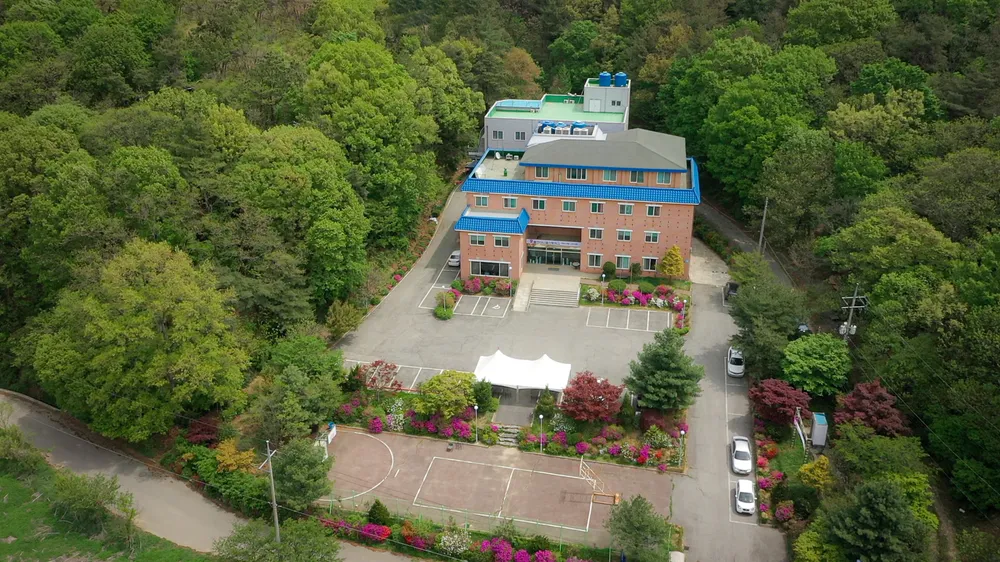
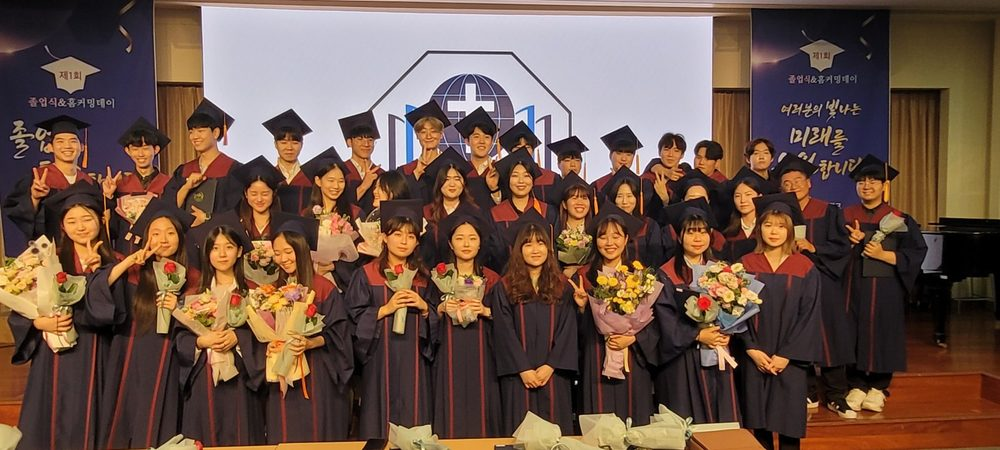
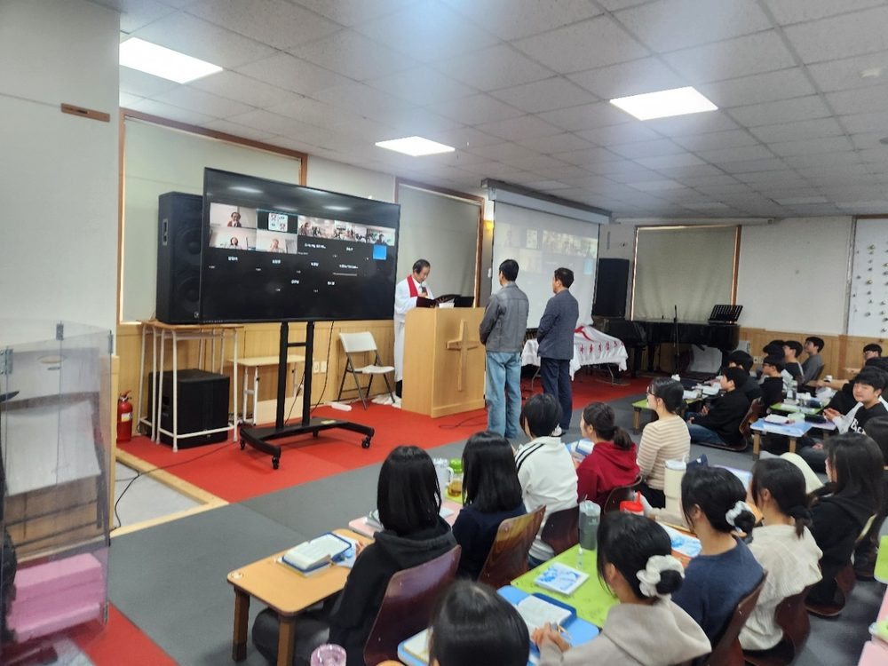
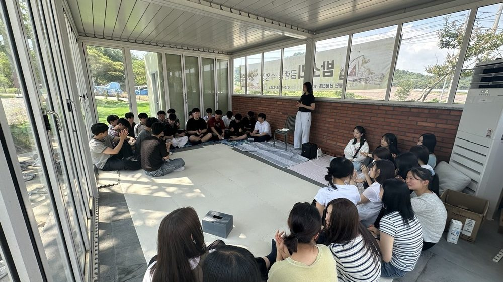
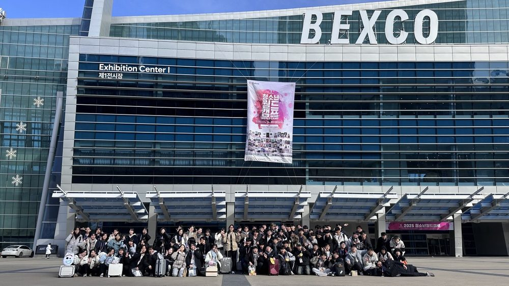
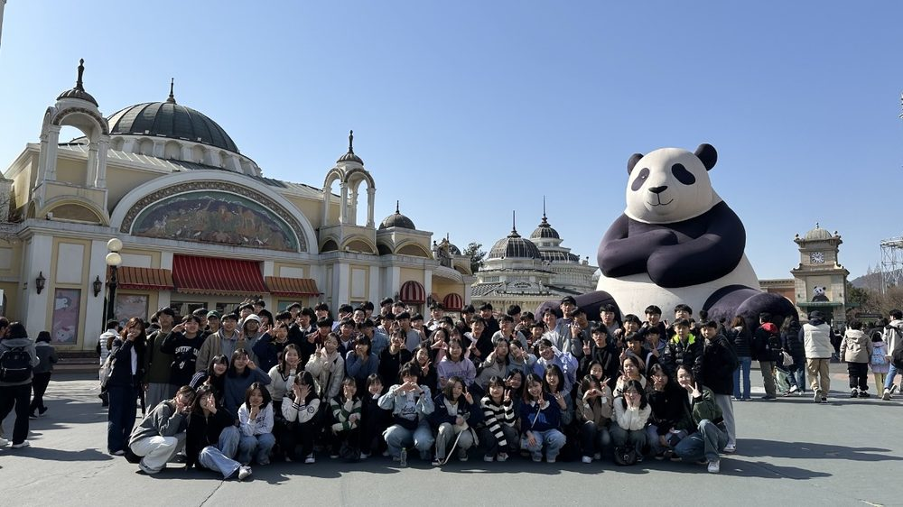
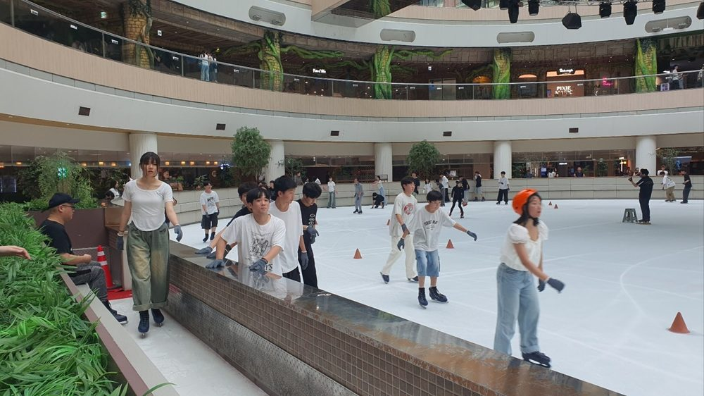
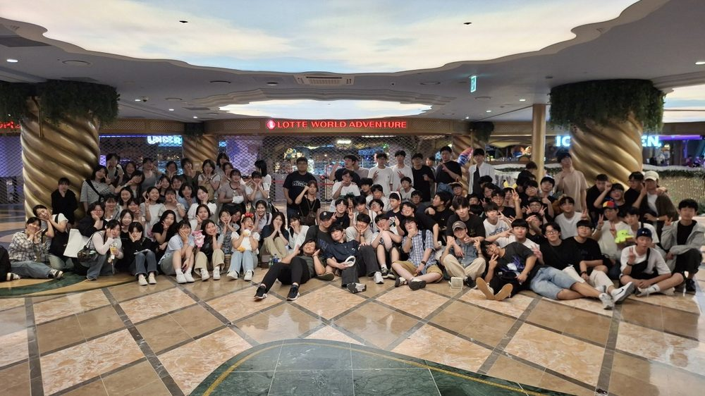

영성 SPIRIT
하루 세 번의 성경공부와 기도와 예배. 교사와 학생이 함께 예수님 앞에 훈련받는 공동체입니다.
충청남도 아산 · 대안교육기관
매일 세 번의 예배와 말씀, 자기주도학습, 그리고 기숙사 공동생활.
충남 아산의 대안교육기관, 폴앤다니엘기독학교입니다.
2010년 개교
한 해도 쉬지 않은 0년
하루 0번
성경공부 · 기도 · 예배
선생님 0명
학생 곁에서 함께 생활합니다
전원 기숙
생활훈련이 곧 교육입니다
교장 인사말
21세기 우리는 심각한 가치관의 혼돈 속에 살아가고 있습니다. 불확신과 황금만능주의, 개인주의와 극단적 상대주의가 학교와 가정과 자녀들의 마음 깊은 곳까지 스며들고 있습니다.
폴앤다니엘기독학교는 이러한 시대적 위기 앞에서, 성경적 가치관으로 다음 세대를 교육하기 위해 세워졌습니다. 영성과 공동체성과 지성을 함께 훈련합니다.
세 가지 기둥
세 가지를 따로 가르치지 않습니다. 하루의 일과 전체가 세 가지를 동시에 훈련하도록 짜여 있습니다.
하루 세 번의 성경공부와 기도와 예배. 교사와 학생이 함께 예수님 앞에 훈련받는 공동체입니다.
각자의 책상에서 각자의 진도로 나아갑니다. 정해진 속도에 맞추는 대신, 스스로 공부하는 힘을 기릅니다.
기숙사 생활훈련을 통해 자기보다 남을 먼저 생각하는, 사회가 필요로 하는 시민으로 자랍니다.
교육과정 자세히
국어 · 영어 · 수학 · 과학 · 고전 인문학 · 체육 · 사회를 배웁니다. 여기에 소그룹 활동과 기독교 채플, 그리고 학생들이 직접 꾸리는 악기 연주와 문화 활동(통기타 · 드럼 · 일렉트릭 기타 · 베이스 · 보컬)이 더해집니다.
본교는 생활 교육을 분명히 합니다. 솔직하게 말씀드립니다.
검정고시 고득점과 TOEIC 고득점을 통해 대학에 진학합니다. AI 시대에 맞추어 수학과 과학 교육에 집중하고, 사회와 기업이 실제로 필요로 하는 과학 · 기술 · 수학 · 정보 · 의료 분야를 권합니다. 수도권과 지방을 가리지 않고 취업으로 이어지는 학과를 목표로 지도합니다.
자녀의 학년과 상황에 따라 경로가 다릅니다. 정확한 안내는 상담에서 드립니다.
학교의 하루
학부모님이 가장 궁금해하시는 것은 “하루를 어떻게 보내는가”입니다. 학교가 실제로 운영하는 주간 생활 계획표입니다.
06:00
성경 연구
성서를 통한 고전 연구와 토의, 그리고 삶에 적용하는 시간으로 하루를 엽니다.
07:00
아침 식사 · 등교 준비
아침을 먹고 수업 준비를 합니다.
09:00
오전 수업
국어 · 영어 · 수학 · 과학 · 고전 인문학 · 사회. 12시까지 이어집니다.
12:00
정오 기도
점심 식사 전, 온 학교가 함께 모여 기도합니다.
13:10
오후 수업
15시 30분까지. 나간 진도를 각자 확인하고 채웁니다.
15:40
선택 수업
체육, 악기(통기타 · 드럼 · 베이스 · 보컬), 소그룹 활동. 17시 40분까지.
19:15
저녁 예배
하루를 말씀으로 닫습니다. 금요일에는 찬양 예배로 모입니다.
22:10
점호 · 소등
기숙사별로 점호한 뒤 22시 30분 일괄 소등합니다.
교육과정
본교는 대안교육기관이며, 자기주도학습으로 가르칩니다. 진도를 따라가지 못하면 뒤처지고, 앞서가면 기다려야 하는 교실 대신, 학생 한 사람의 속도를 기준으로 삼습니다.

같은 페이지를 함께 넘기지 않습니다. 배운 내용을 완전히 숙지한 것이 확인되어야 다음 과로 넘어갑니다. 일일 목표를 스스로 세우고, 점검과 중간 시험으로 확인합니다.
혼자 두지 않습니다. 담당 교사와 교감 · 교장이 꾸준히 상담하며, 막힌 곳을 짚고 진도와 성취를 함께 확인합니다.
공부보다 앞에 있는 것이 있습니다. 아침 성경 연구 · 정오 기도 · 저녁 예배로 하루 세 번 모이고, 그 위에 학업을 쌓습니다.
학교 둘러보기
교정과 기숙사, 예배와 수련회, 졸업식과 나들이까지. 학생들이 실제로 보내는 시간입니다.










※ 학생 얼굴이 나오는 사진은 학부모 동의 여부를 확인한 컷만 사용합니다.
전화 주시기 전에
언제든 전화로 물어보셔도 됩니다
평일 09:00 – 17:00, 041-425-0085. 시간이 맞지 않으시면 상담 신청을 남겨 주시면 연락드립니다.
학교 방문은 사전 예약으로 진행됩니다
기숙학교라 학생들이 생활하는 공간입니다. 미리 연락 주시면 편한 시간으로 안내드립니다.
학력과 진학은 가정마다 상황이 다릅니다
본교는 대안교육기관입니다. 자녀의 학년과 상황에 맞게 전화로 정확히 안내드리겠습니다.
오시는 길
학교 방문 상담은 사전 예약으로 진행됩니다. 아래 양식을 남겨 주시면 담당 선생님이 연락드립니다.